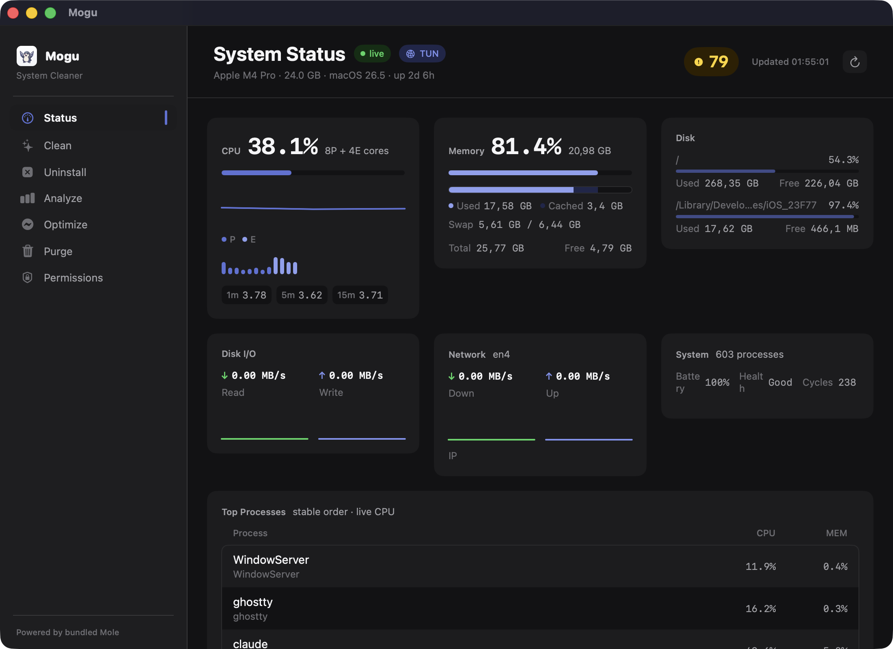
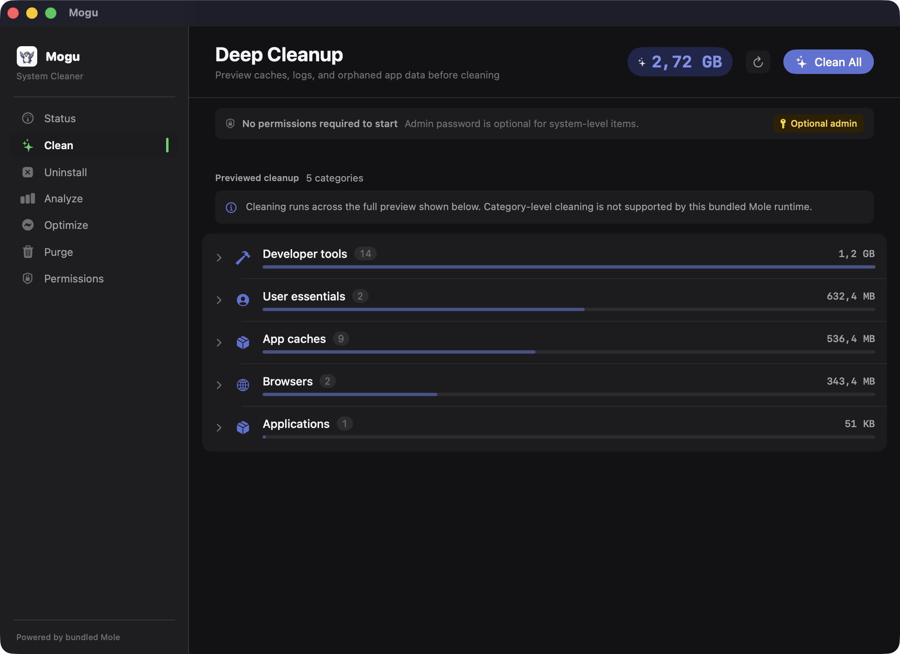
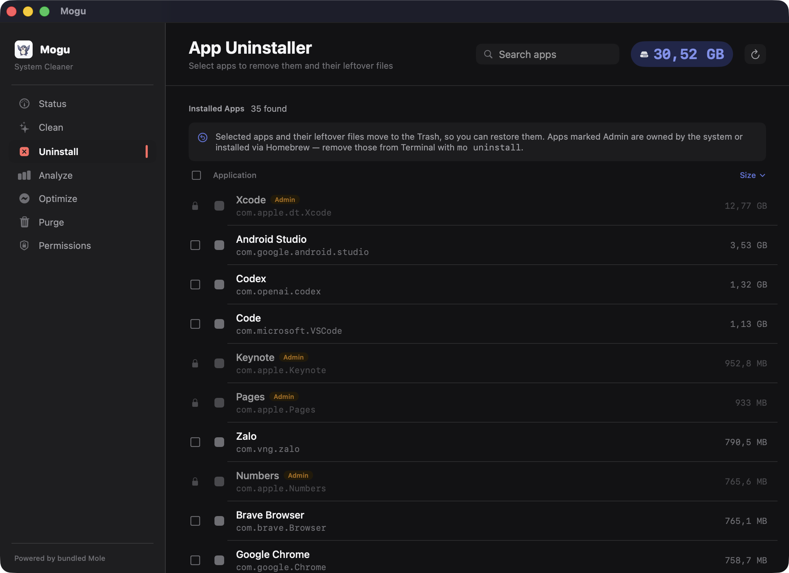
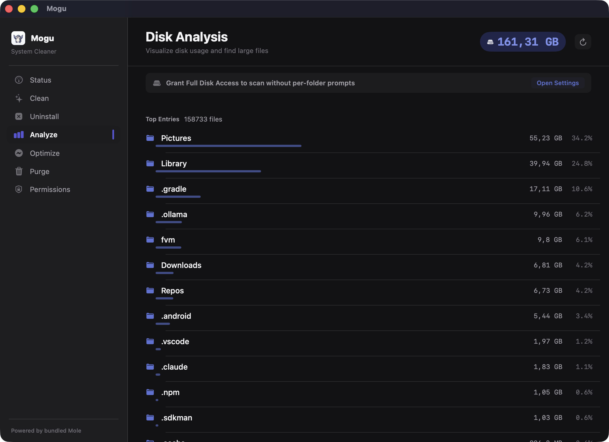
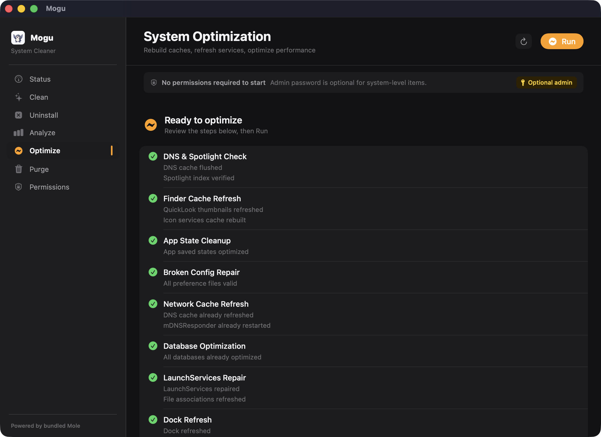

Preview before delete
Destructive actions are gated by dry-run previews or explicit confirmation, so cleanup stays reviewable.
macOS 14+ native utility
Mogu is a friendly SwiftUI GUI for Mole. It helps you review caches, app leftovers, disk usage, and optimization steps before anything destructive runs.

Clean, uninstall, optimize, and purge flows show a preview or confirmation before deletion.
Why Mogu
Use the power of Mole without memorizing CLI commands. Mogu keeps the safety model visible and the interface native.
Destructive actions are gated by dry-run previews or explicit confirmation, so cleanup stays reviewable.
SwiftUI screens, system colors, Sparkle updates, and a compact dashboard built for desktop workflows.
Mogu bundles a pinned Mole runtime from source, so the app behavior stays tied to the shipped version.
Screenshots
Status, Clean, Uninstall, Analyze, Optimize, Purge, and Permissions are designed as scan-first Mac utility screens.




Safety
Mogu is intentionally Mac-first. It works on the machine being inspected, does not require permission at launch, and asks for elevated access only when the user chooses a flow that needs it.
Mogu calls the bundled Mole runtime and keeps long-running previews visibly loading.
The app surfaces categories, paths, app leftovers, and admin-only work before execution.
Clean, optimize, purge, and uninstall actions require preview or confirmation before deleting.
Roadmap
The next work is distribution trust, first-run polish, and release hygiene before any remote or mobile companion.
Upstream credit
Mogu is an independent, unofficial GUI. If you want the polished official paid app, support the Mole author by buying Mole for Mac.
FAQ
No. Mogu is an independent open-source GUI built on Mole, and it credits the upstream project clearly.
No permission is required to launch. Full Disk Access is optional and mainly reduces macOS folder prompts during scans.
No. The app follows preview-before-delete for destructive flows, and uninstalls move recoverable items to Trash.
Not as a cleaner. iOS cannot inspect and clean your Mac. A read-only companion is only worth considering if users ask for remote multi-Mac monitoring.
Download Mogu from GitHub Releases, run it on macOS 14 or later, and review every destructive action before it runs.
Download for macOS 14+